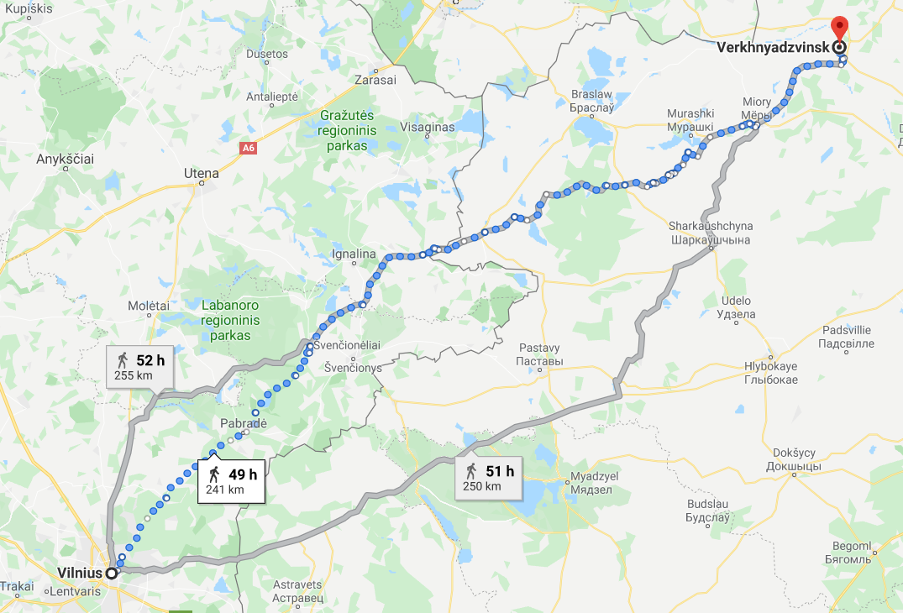
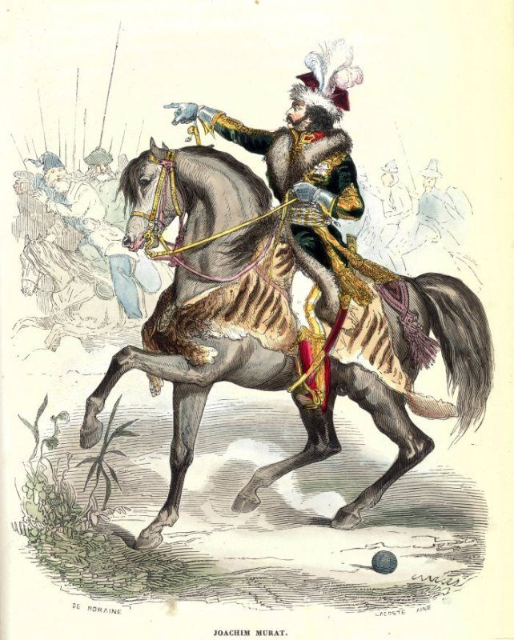

프랑스군의 추격 - 뮈라와 말
게시: 2020-01-13T06:30:54+09:00
드리사 요새에 도착한 이후 5일 간이나 시간을 허비한 뒤 러시아군이 마침내 비텝스크를 향해 철수를 시작한 것은 7월 16일이었습니다. 5일이면 잘 닦인 포장 도로에서 완전무장한 보병 사단이 160km를, 험한 길이라고 해도 100km는 행군할 수 있는 시간이고, 무리한 강행군이라면 200km를 갈 수 있는 시간입니다. 빌나(Vilna, 현재는 Vilnius)에서 드리사(Drissa, 벨라루스어로 Vierchniadzvinsk)까지의 거리는 불과 240km 정도 밖에 안 되었고, 뒤를 쫓는 것은 전쟁을 총이 아니라 발로 하는 것으로 유명한 나폴레옹의 프랑스군이었습니다. 게다가 나폴레옹이 빌나에 입성한 것은 알렉산드르가 황급히 빌나에서 철수한지 48시간이 지나기 전의 일이었습니다. 불과 2일의 리드를 가지고 있을 뿐이었던 러시아군이 무려 5일이나 낭비하다니 이건 큰 문제였습니다. 그러나 러시아 제1군은 비텝스크에 거의 도달할 때까지 프랑스군으로부터 거의 방해를 받지 않고 순조롭게 후퇴를 할 수 있었습니다. 대체 어떻게 된 것일까요 ? 일단 러시아에서의 행군은 도로 사정 때문에 의외로 시간이 오래 걸렸다는 것을 감안하셔야 합니다. 러시아군도 프랑스군 못지 않게 강행군에 꽤 익숙한 부대였고 바클레이가 군을 잘 통솔했음에도 불구하고 빌나에서 철수를 시작한 6월 26일 이후 무려 15일이나 걸려서야 드리사에 입성할 수 있었습니다. 240km라면 당시 프랑스 보병 사단의 평균적인 이동 속도로 12일 걸릴 거리였는데, 러시아의 도로 사정이 좋지 않았음을 감안하고 또 많은 야포와 군수품을 함께 가지고 이동한 것을 생각하면 꽤 괜찮은 성적이었습니다.

(현대 리투아니아의 수도인 빌나에서 드리사까지의 거리입니다.) 하지만 그 뒤를 쫓는 것은 당대 유럽 최고의 기병이라는 뮈라가 지휘하는 약 4만의 기병 예비군단이었습니다. 대포와 짐마차, 보병 사단들이 뒤섞인 러시아군은 도저히 프랑스군 기병대의 추격을 따돌릴 수 없어야 했습니다. 그리고 뮈라가 직접 선두에 서서 돌격하는 기병대의 공격에 러시아군은 산산조각이 나서 거미새끼들처럼 흩어져야 했습니다. 그런데 뮈라의 기병 군단은 바람처럼 달리기는 커녕 러시아군의 후미를 제대로 집적거리지도 못했습니다. 그렇게 된 이유는 결국 현실 세계에 용이 존재할 수 없는 이유와 똑같은 것이었습니다. 그 정도 덩치의 괴물을 지탱할 수준의 먹이가 없어서였지요. 나폴레옹의 그랑다르메 전체가 네만 강을 건넌 이후, 아니 사실은 네만 강을 건너기 전부터도 식량 조달에 어려움을 겪고 있었습니다만, 그 중에서도 가장 큰 어려움을 겪고 있던 것은 말못하는 불쌍한 짐승인 말이었습니다. 네만 강을 넘자마자 불과 1주일 만에 3~4만 마리의 말이 죽어야 했는데, 이는 6월말에 갑자기 쏟아진 하룻밤 폭풍우 때문이기도 했습니다만 기본적으로 사료와 물 부족으로 인한 것이었습니다. 4만의 기병 군단이라면 말이 하루에 9kg의 사료를, 사람이 하루에 대략 1kg의 식량을 먹어야 하니 하루에 400톤의 보급품이 필요했습니다. 그러나 이들에게 주어진 것은 실질적으로 아무것도 없었습니다. 이들은 그냥 알아서 먹을 것을 찾아가며 러시아군을 추격해야 했는데, 러시아군이 굳이 초토화 작전을 한답시고 적극적으로 파괴행위를 하지 않았다고 해도 이들이 달려야 하는 길 주변은 이미 러시아군이 샅샅이 뒤져먹고 간 뒤여서 말이 뜯을 풀도 거의 남아 있지 않았습니다. 이런 상황을 더욱 악화시킨 것은 뮈라 본인이었습니다. 평범한 근위대 장교 군복 위에 수수한 회색 코트를 즐겨 입었던 나폴레옹과는 달리 뮈라는 절대 제식 군복을 입지 않고 항상 스스로 디자인한 폴란드나 투르크식의 이국적인 복장을 입고 다녔는데, 이번 원정도 예외가 아니어서 마차 하나에 그런 이상한 족보도 없는 옷상자와 함께 각종 남성 화장품 및 향수를 잔뜩 채워서 끌고 올 정도로 허세를 부렸습니다. 그렇게 쓸데없는 것에 허세를 부리던 뮈라는 최고의 기병 사령관이라는 수식어가 부끄러울 정도로 정작 군마의 보존에 대해서는 관심이 1도 없는 비정한 동물 학대자였습니다. 최고위층의 이런 태도는 중간 지휘관들에게도 분명한 영향을 끼쳤습니다. 전반적인 프랑스 기병대 장군들의 태도는 '말이란 승리와 영광을 위해 쓰고 버리는 소모품'이라는 것이었고, 더더욱 군마를 먹이고 돌보는 것에 관심이 없었고 극한의 상황으로 군마들을 내몰았습니다.

(조아생 뮈라입니다. 안장 밑의 호랑이 가죽이 예사롭지 않지요 ? 동시대 사람이 그의 외관에 대해서 써놓은 것은 읽어볼 만 합니다. "그는 언제나 화려하고 때론 기괴한 복장을 하고 있었는데 주로 폴란드나 무슬림들의 전통 복장에서 따온 것으로서, 화려한 색상의 값비싼 옷감과 털가죽, 자수, 진주, 다이아몬드 등이 결합된 것이었다. 그의 넓은 어깨에는 풍성하고 긴 곱슬머리가 늘어뜨려져 있었고 굵고 검은 구레나룻과 번쩍이는 큰 눈은 보는 사람을 매료시켰다. 그런 외모로 인해 사람들은 그에게서 사기꾼 같다는 인상을 받았다." 결론은 사기꾼이네요.) 프랑스군은 누가 봐도 러시아군에 비하면 선진적인 조직이었습니다. 프랑스군에서는 대부분의 장교들이 출신 가문이 아니라 실력과 전공에 의해 승진한 사람들이었고 사병들 상당수가 읽고 쓸 줄 알았으며 체벌도 금지되어 있었습니다. 이런 선진 프랑스군도 러시아군에 비해 안 좋은 점이 있긴 했습니다. 일단 사병들의 군복이 실용적이지 못했습니다. 러시아군은 농노들을 차출하여 만든 군대답게 병사들의 자부심보다는 그저 실용성에 중점을 두어 투박하지만 움직이기 편하고 넉넉한 바지를 입고 있었습니다. 그러나 아직 17~18세기 왕정 시대 군대의 전통을 완전히 버리지 못한 프랑스군은 무엇보다 사기를 중시하여, 움직이는데는 좀 불편하더라도 보기에 멋져보이는 꽉 끼는 바지와 코트를 입혔습니다. 그래서 평소 행군할 때는 프랑스군도 정복은 배낭 속에 둘둘 말아두고 헐렁한 작업복을 입고 행군했습니다. 뿐만 아니라 꽤 불필요해보이는 전통도 가지고 있었습니다. 라 디안느(la Diane)라는 일일 행사가 있었는데, 디안느라는 단어는 달의 여신 다이아나(그리스식으로는 아르테미스) 여신의 이름이기도 하지만 프랑스어로 '기상나팔'이라는 뜻도 있습니다. 이 행사는 특히 기병대에게 상당히 괴로운 것이었습니다. 러시아 제1군의 뒤를 쫓는 뮈라의 기병 군단처럼 보병의 지원없이 단독으로 움직이는 기병 부대는 원래 야습에 특히 취약했습니다. 기병대의 모든 강점은 스피드에서 나왔는데, 밤에 안장을 풀어놓고 야영하는 상황에서 적의 기습이라도 받았다가는 그야말로 박살이 날 수 있기 때문이었습니다. 그래서 특히 기병 단독으로 움직일 때는 야영시에 사방 먼 곳까지 초계 임무를 띤 기병 소대들을 배치하여 야간 경계를 세웠습니다. 원래 초계 소대의 임무 본질상, 이렇게 밤새 고생한 초계 대원들이 아침이 되어 본진 병력들이 전투 태세를 완전히 갖추고 난 뒤, 본진에서 돌아오라는 명령을 받은 뒤에야 본진에 합류할 수 있었습니다. 그 때문에 '라 디안느'라는 일일 점호가 특히 괴로운 것이 되었습니다. 즉 기상 시간이 되어 전체 기병 연대나 사단 병력이 불편한 잠자리에서 일어나 군장을 챙기고 안장을 얹는 등 출격 준비를 끝낸 뒤에도, 보통 1시간 떄로는 2시간 가까이나 초계 소대들이 다 돌아올 때까지 대오를 갖춘 채 기다려야 했던 것입니다. 가뜩이나 먹을 것과 마실 것이 없어서 힘든데 이렇게 무의미하게 1~2시간을 출격 대기 상태로 기다려야 했던 본진 병력만 힘든 것이 아니었습니다. 밤새도록 안장을 벗기지도 못하고 경계 근무를 서야 했던 초계 소대들은 더 힘들었습니다.

(Chasseurs à Cheval, 즉 엽기병 부대입니다. 엽기병은 기본적으로 경기병으로서 기본 무장은 얇은 군도였고 사실 다른 기병들과 딱히 다른 점은 군복 외에는 없었습니다. 그러나 그림에서 보시다시피 화려한 펠리즈와 털가죽 모자로 유명했습니다. 펠리즈는 정말 화려함 외에는 아무짝에도 쓸모가 없는 허세 뿐인 복장이었지만 저 털가죽 모자는 의외로 방호력이 좋아서 군도의 타격을 견디는데는 흉갑 기병들이 쓰는 강철 투구보다 더 우수했다고 합니다.) 당시 뮈라 휘하에서 러시아 제1군의 뒤를 추격하던 제16 엽기병(Chasseurs à Cheval) 연대의 한 대위가 그때 겪었던 일화에 대해 적은 기록이 있습니다. "비아스마(Viasma)에서 전투를 치렀던 날 저녁에 난 휘하의 기병 중대 100명과 함께 초계 임무를 띠고 파견되었다. 난 지정된 초계 장소를 고수하라는 명령과 함께 절대 안장을 벗기지 말라는 엄격한 지시도 전달받았는데, 다음날 정오가 되어서야 본진으로의 귀환 명령을 받았다. 내 중대의 말들은 그 전날 오전 6시에 안장을 얹은 이후 한번도 안장을 벗을 기회를 갖지 못한 것이었다. 게다가 우리에겐 아무런 식량과 사료도 주어지지 않았고 근처에 마실 물도 없었다. 그날 밤 나는 휘하 장교 하나를 장군께 보내 우리 중대가 처한 상황을 설명하고 병사들을 위한 빵과, 무엇보다 말들에게 먹일 귀리를 좀 보내주실 것을 요청했다. 그의 대답은 이런 것이었다. '내 임무는 너희들을 싸우게 만드는 것이지 너희들을 먹이는 것이 아니다.' 그래서 결국 우리 말들은 아무것도 먹지도 마시지도 못한 채로 무려 30시간을 버텨야 했다. 그렇게 기진맥진한 상태로 본진에 돌아왔는데, 그때는 이미 부대 전체가 출발할 시간이었다. 우리 중대에게는 휴식 시간이 딱 1시간 주어졌고, 그 뒤에는 먼저 출발한 본진을 따라잡기 위해 속보로 달려야 했다. 결국 나는 말이 더 이상 걷을 수 없었던 대원 12명을 뒤에 남겨두고 떠나야 했다." 이렇게 학대당하는 불쌍한 짐승들로 과연 러시아군을 얼마나 추격할 수 있었을까요 ? 성경에도 씌여있듯이 모든 사람은 뿌린 대로 거두는 법입니다. 위의 증언에서도 나오듯이, 프랑스 기병대는 평상시에는 속보가 아니라 걸어서 러시아군을 추격해야 했습니다. 바로 직전까지 주러시아 프랑스 대사였다가 복귀하여 나폴레옹의 마복시 역할을 하던 콜랭쿠르(Caulaincourt)는 이때 즈음해서 프랑스군 기병대가 러시아군의 후위 부대와 교전하는 모습을 목격했습니다. 프랑스 기병대원들은 적진에 돌격한 뒤 되돌아올 때, 놀랍게도 말에서 내려 말을 끌고 걸어왔습니다. 말들이 너무 지쳐서, 만약 러시아군이 반격을 해온다면 기병대원들은 자기 다리로 뛰어서 도망치는 것이 더 빨랐기 때문이었습니다.
이렇게 프랑스 기병대는 엉망진창 상태였지만, 그래도 보급품이 없었기 때문에 짐은 가벼웠고 덕분에 결국 러시아 제1군을 따라잡기는 했습니다. 비텝스크 약 15km 서쪽, 오스트로브노(Ostrovno)에서였습니다.
Source : 1812 Napoleon's Fatal March on Moscow by Adam Zamoyski https://en.wikipedia.org/wiki/Chasseurs_%C3%A0_Cheval_de_la_Garde_Imp%C3%A9riale